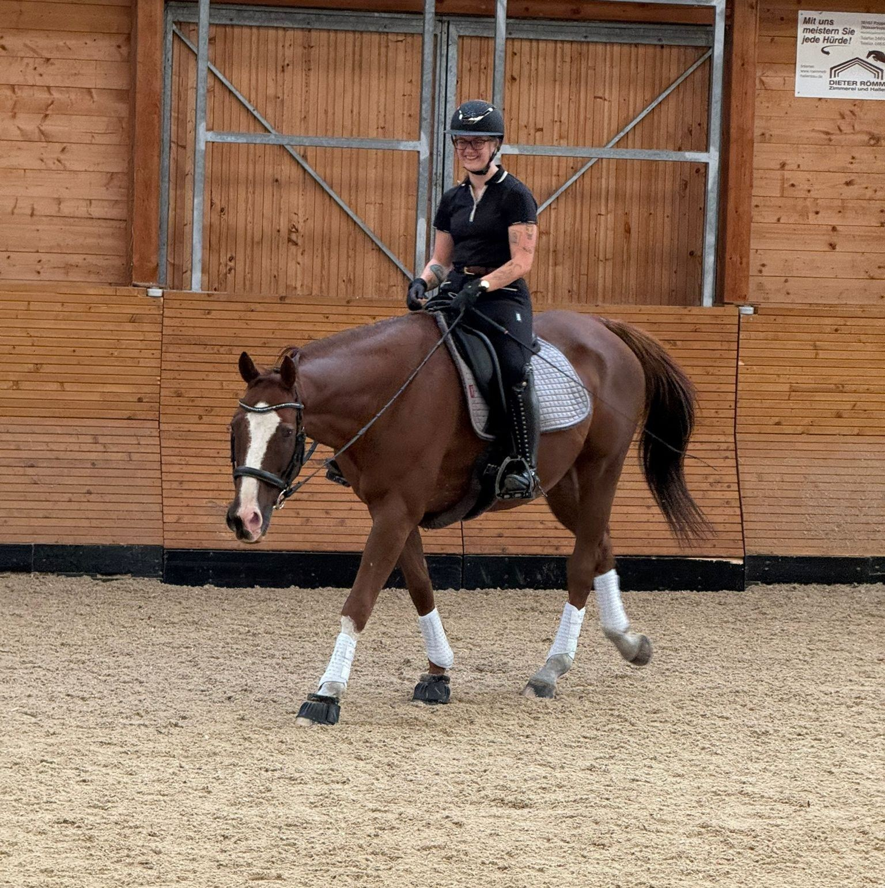

Data-Driven Decision Making for Horse Owners

Hi, I'm Eloise Borderick. I am a Software Testing and Data Analytics professional with seven years of industry experience spanning performance testing, test automation, and quality assurance. Holding a Level 4 Software Testing Apprenticeship alongside multiple ISTQB certifications, I recently completed a BSc (Hons) Digital and Technology Solutions degree apprenticeship specialising in Data Analytics, graduating with a 2:1 and a Distinction in my End-Point Assessment (EPA).
As an equestrian, I built this hub to bridge the gap between technical data analytics and practical equine management. This platform acts as an engineering portfolio to showcase my capability in handling live data streams and building objective alternatives to the subjective, anecdotal advice common in livery environments. By combining real-time API metrics with peer-reviewed research, these tools are built to deliver verifiable, welfare-first parameters for horse care.
Enter your location to pull live meteorological data and instantly calculate precise thermal risk thresholds tailored to your horse's breed, coat dynamics, and underlying health profiles.
Launch Live Safety Calculator →New data-driven modules focusing on equine metrics are currently in the pipeline.
© 2026 Eloise Borderick / Equine Analytics Hub. All Rights Reserved.